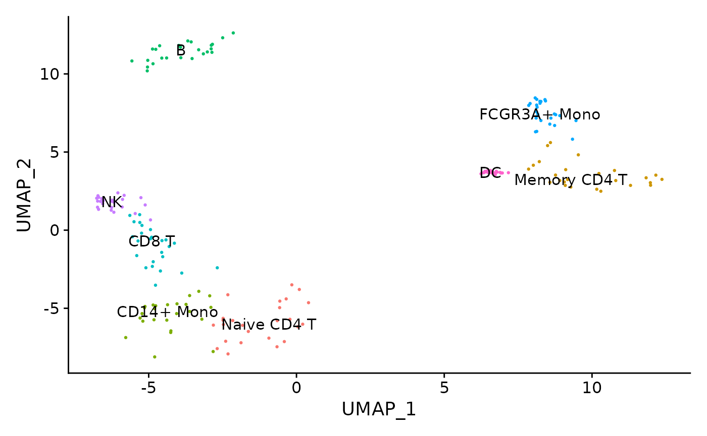
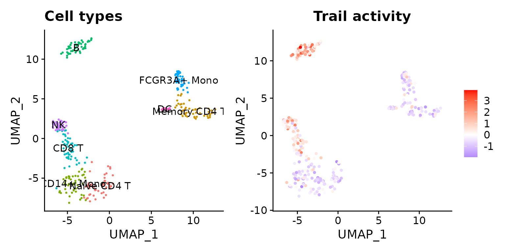
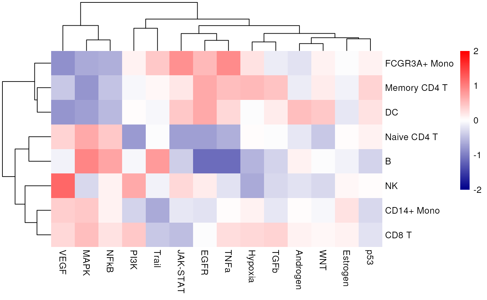

Pathway activity inference from scRNA-seq
Pau Badia-i-Mompel
Heidelberg UniversiySource:
vignettes/pw_sc.Rmd
pw_sc.RmdscRNA-seq yield many molecular readouts that are hard to interpret by themselves. One way of summarizing this information is by inferring pathway activities from prior knowledge.
In this notebook we showcase how to use decoupleR for
pathway activity inference with a down-sampled PBMCs 10X data-set. The
data consists of 160 PBMCs from a Healthy Donor. The original data is
freely available from 10x Genomics here
from this webpage.
Loading packages
First, we need to load the relevant packages, Seurat to
handle scRNA-seq data and decoupleR to use statistical
methods.
Loading the data-set
Here we used a down-sampled version of the data used in the
Seurat vignette.
We can open the data like this:
inputs_dir <- system.file("extdata", package = "decoupleR")
data <- readRDS(file.path(inputs_dir, "sc_data.rds"))We can observe that we have different cell types:

PROGENy model
PROGENy is a comprehensive resource containing a curated collection of pathways and their target genes, with weights for each interaction. For this example we will use the human weights (other organisms are available) and we will use the top 500 responsive genes ranked by p-value. Here is a brief description of each pathway:
- Androgen: involved in the growth and development of the male reproductive organs.
- EGFR: regulates growth, survival, migration, apoptosis, proliferation, and differentiation in mammalian cells
- Estrogen: promotes the growth and development of the female reproductive organs.
- Hypoxia: promotes angiogenesis and metabolic reprogramming when O2 levels are low.
- JAK-STAT: involved in immunity, cell division, cell death, and tumor formation.
- MAPK: integrates external signals and promotes cell growth and proliferation.
- NFkB: regulates immune response, cytokine production and cell survival.
- p53: regulates cell cycle, apoptosis, DNA repair and tumor suppression.
- PI3K: promotes growth and proliferation.
- TGFb: involved in development, homeostasis, and repair of most tissues.
- TNFa: mediates haematopoiesis, immune surveillance, tumour regression and protection from infection.
- Trail: induces apoptosis.
- VEGF: mediates angiogenesis, vascular permeability, and cell migration.
- WNT: regulates organ morphogenesis during development and tissue repair.
To access it we can use decoupleR:
net <- get_progeny(organism = 'human', top = 500)
net
#> # A tibble: 7,000 × 4
#> source target weight p_value
#> <chr> <chr> <dbl> <dbl>
#> 1 Androgen TMPRSS2 11.5 2.38e-47
#> 2 Androgen NKX3-1 10.6 2.21e-44
#> 3 Androgen MBOAT2 10.5 4.63e-44
#> 4 Androgen KLK2 10.2 1.94e-40
#> 5 Androgen SARG 11.4 2.79e-40
#> 6 Androgen SLC38A4 7.36 1.25e-39
#> 7 Androgen MTMR9 6.13 2.53e-38
#> 8 Androgen ZBTB16 10.6 1.57e-36
#> 9 Androgen KCNN2 9.47 7.71e-36
#> 10 Androgen OPRK1 -5.63 1.11e-35
#> # ℹ 6,990 more rowsActivity inference with Multivariate Linear Model (MLM)
To infer pathway enrichment scores we will run the Multivariate
Linear Model (mlm) method. For each sample in our dataset
(mat), it fits a linear model that predicts the observed
gene expression based on all pathways’ Pathway-Gene interactions
weights. Once fitted, the obtained t-values of the slopes are the
scores. If it is positive, we interpret that the pathway is active and
if it is negative we interpret that it is inactive.

To run decoupleR methods, we need an input matrix
(mat), an input prior knowledge network/resource
(net), and the name of the columns of net that we want to
use.
# Extract the normalized log-transformed counts
mat <- as.matrix(data@assays$RNA@data)
# Run mlm
acts <- run_mlm(mat=mat, net=net, .source='source', .target='target',
.mor='weight', minsize = 5)
acts
#> # A tibble: 2,240 × 5
#> statistic source condition score p_value
#> <chr> <chr> <chr> <dbl> <dbl>
#> 1 mlm Androgen AAACATACAACCAC-1 0.559 0.576
#> 2 mlm EGFR AAACATACAACCAC-1 3.63 0.000290
#> 3 mlm Estrogen AAACATACAACCAC-1 -0.886 0.375
#> 4 mlm Hypoxia AAACATACAACCAC-1 1.22 0.224
#> 5 mlm JAK-STAT AAACATACAACCAC-1 -1.02 0.308
#> 6 mlm MAPK AAACATACAACCAC-1 -2.74 0.00619
#> 7 mlm NFkB AAACATACAACCAC-1 -0.230 0.818
#> 8 mlm PI3K AAACATACAACCAC-1 -1.09 0.276
#> 9 mlm TGFb AAACATACAACCAC-1 0.248 0.804
#> 10 mlm TNFa AAACATACAACCAC-1 2.22 0.0264
#> # ℹ 2,230 more rowsVisualization
From the obtained results, we will select the ulm
activities and store them in our object as a new assay called
pathwaysmlm:
# Extract mlm and store it in pathwaysmlm in data
data[['pathwaysmlm']] <- acts %>%
pivot_wider(id_cols = 'source', names_from = 'condition',
values_from = 'score') %>%
column_to_rownames('source') %>%
Seurat::CreateAssayObject(.)
# Change assay
DefaultAssay(object = data) <- "pathwaysmlm"
# Scale the data
data <- ScaleData(data)
data@assays$pathwaysmlm@data <- data@assays$pathwaysmlm@scale.dataThis new assay can be used to plot activities. Here we visualize the Trail pathway, associated with apoptosis, which seems that in B and NK cells is more active.
p1 <- DimPlot(data, reduction = "umap", label = TRUE, pt.size = 0.5) +
NoLegend() + ggtitle('Cell types')
p2 <- (FeaturePlot(data, features = c("Trail")) &
scale_colour_gradient2(low = 'blue', mid = 'white', high = 'red')) +
ggtitle('Trail activity')
p1 | p2
Exploration
We can also see what is the mean activity per group across pathways:
# Extract activities from object as a long dataframe
df <- t(as.matrix(data@assays$pathwaysmlm@data)) %>%
as.data.frame() %>%
mutate(cluster = Idents(data)) %>%
pivot_longer(cols = -cluster, names_to = "source", values_to = "score") %>%
group_by(cluster, source) %>%
summarise(mean = mean(score))
# Transform to wide matrix
top_acts_mat <- df %>%
pivot_wider(id_cols = 'cluster', names_from = 'source',
values_from = 'mean') %>%
column_to_rownames('cluster') %>%
as.matrix()
# Choose color palette
palette_length = 100
my_color = colorRampPalette(c("Darkblue", "white","red"))(palette_length)
my_breaks <- c(seq(-2, 0, length.out=ceiling(palette_length/2) + 1),
seq(0.05, 2, length.out=floor(palette_length/2)))
# Plot
pheatmap(top_acts_mat, border_color = NA, color=my_color, breaks = my_breaks) 
In this specific example, we can observe that Trail is more active in B and NK cells.
Session information
#> ─ Session info ───────────────────────────────────────────────────────────────────────────────────────────────────────
#> setting value
#> version R version 4.3.1 (2023-06-16)
#> os Ubuntu 22.04.3 LTS
#> system x86_64, linux-gnu
#> ui X11
#> language en
#> collate en_US.UTF-8
#> ctype en_US.UTF-8
#> tz UTC
#> date 2024-03-24
#> pandoc 3.1.1 @ /usr/local/bin/ (via rmarkdown)
#>
#> ─ Packages ───────────────────────────────────────────────────────────────────────────────────────────────────────────
#> package * version date (UTC) lib source
#> abind 1.4-5 2016-07-21 [1] RSPM
#> backports 1.4.1 2021-12-13 [1] RSPM
#> BiocManager 1.30.22 2023-08-08 [1] RSPM
#> BiocParallel 1.36.0 2023-10-24 [1] Bioconductor
#> BiocStyle * 2.30.0 2023-10-24 [1] Bioconductor
#> bit 4.0.5 2022-11-15 [1] RSPM
#> bit64 4.0.5 2020-08-30 [1] RSPM
#> bookdown 0.36 2023-10-16 [1] RSPM
#> bslib 0.5.1 2023-08-11 [1] RSPM
#> cachem 1.0.8 2023-05-01 [1] RSPM
#> cellranger 1.1.0 2016-07-27 [1] RSPM
#> checkmate 2.3.0 2023-10-25 [1] RSPM
#> cli 3.6.1 2023-03-23 [1] RSPM
#> cluster 2.1.4 2022-08-22 [2] CRAN (R 4.3.1)
#> codetools 0.2-19 2023-02-01 [2] CRAN (R 4.3.1)
#> colorspace 2.1-0 2023-01-23 [1] RSPM
#> cowplot 1.1.1 2020-12-30 [1] RSPM
#> crayon 1.5.2 2022-09-29 [1] RSPM
#> curl 5.1.0 2023-10-02 [1] RSPM
#> data.table 1.14.8 2023-02-17 [1] RSPM
#> decoupleR * 2.9.5 2024-03-24 [1] Bioconductor
#> deldir 1.0-9 2023-05-17 [1] RSPM
#> desc 1.4.2 2022-09-08 [1] RSPM
#> digest 0.6.33 2023-07-07 [1] RSPM
#> dotCall64 1.1-0 2023-10-17 [1] RSPM
#> dplyr * 1.1.3 2023-09-03 [1] RSPM
#> ellipsis 0.3.2 2021-04-29 [1] RSPM
#> evaluate 0.22 2023-09-29 [1] RSPM
#> fansi 1.0.5 2023-10-08 [1] RSPM
#> farver 2.1.1 2022-07-06 [1] RSPM
#> fastDummies 1.7.3 2023-07-06 [1] RSPM (R 4.3.0)
#> fastmap 1.1.1 2023-02-24 [1] RSPM
#> fitdistrplus 1.1-11 2023-04-25 [1] RSPM
#> fs 1.6.3 2023-07-20 [1] RSPM
#> future 1.33.0 2023-07-01 [1] RSPM
#> future.apply 1.11.0 2023-05-21 [1] RSPM
#> generics 0.1.3 2022-07-05 [1] RSPM
#> ggplot2 * 3.4.4 2023-10-12 [1] RSPM
#> ggrepel 0.9.4 2023-10-13 [1] RSPM
#> ggridges 0.5.4 2022-09-26 [1] RSPM
#> globals 0.16.2 2022-11-21 [1] RSPM
#> glue 1.6.2 2022-02-24 [1] RSPM
#> goftest 1.2-3 2021-10-07 [1] RSPM
#> gridExtra 2.3 2017-09-09 [1] RSPM
#> gtable 0.3.4 2023-08-21 [1] RSPM
#> hms 1.1.3 2023-03-21 [1] RSPM
#> htmltools 0.5.6.1 2023-10-06 [1] RSPM
#> htmlwidgets 1.6.2 2023-03-17 [1] RSPM
#> httpuv 1.6.12 2023-10-23 [1] RSPM
#> httr 1.4.7 2023-08-15 [1] RSPM
#> ica 1.0-3 2022-07-08 [1] RSPM
#> igraph 1.5.1 2023-08-10 [1] RSPM
#> irlba 2.3.5.1 2022-10-03 [1] RSPM
#> jquerylib 0.1.4 2021-04-26 [1] RSPM
#> jsonlite 1.8.7 2023-06-29 [1] RSPM
#> KernSmooth 2.23-22 2023-07-10 [1] RSPM
#> knitr 1.44 2023-09-11 [1] RSPM
#> labeling 0.4.3 2023-08-29 [1] RSPM
#> later 1.3.1 2023-05-02 [1] RSPM
#> lattice 0.22-5 2023-10-24 [1] RSPM
#> lazyeval 0.2.2 2019-03-15 [1] RSPM
#> leiden 0.4.3 2022-09-10 [1] RSPM
#> lifecycle 1.0.3 2022-10-07 [1] RSPM
#> listenv 0.9.0 2022-12-16 [1] RSPM
#> lmtest 0.9-40 2022-03-21 [1] RSPM
#> logger 0.2.2 2021-10-19 [1] RSPM
#> lubridate 1.9.3 2023-09-27 [1] RSPM
#> magrittr 2.0.3 2022-03-30 [1] RSPM
#> MASS 7.3-60 2023-05-04 [2] CRAN (R 4.3.1)
#> Matrix 1.6-1.1 2023-09-18 [1] RSPM
#> matrixStats 1.1.0 2023-11-07 [1] RSPM (R 4.3.0)
#> memoise 2.0.1 2021-11-26 [1] RSPM
#> mime 0.12 2021-09-28 [1] RSPM
#> miniUI 0.1.1.1 2018-05-18 [1] RSPM
#> munsell 0.5.0 2018-06-12 [1] RSPM
#> nlme 3.1-163 2023-08-09 [1] RSPM
#> OmnipathR 3.10.1 2023-10-25 [1] Bioconductor
#> parallelly 1.36.0 2023-05-26 [1] RSPM
#> patchwork * 1.1.3 2023-08-14 [1] RSPM
#> pbapply 1.7-2 2023-06-27 [1] RSPM
#> pheatmap * 1.0.12 2019-01-04 [1] RSPM
#> pillar 1.9.0 2023-03-22 [1] RSPM
#> pkgconfig 2.0.3 2019-09-22 [1] RSPM
#> pkgdown 2.0.7 2022-12-14 [1] RSPM
#> plotly 4.10.3 2023-10-21 [1] RSPM
#> plyr 1.8.9 2023-10-02 [1] RSPM
#> png 0.1-8 2022-11-29 [1] RSPM
#> polyclip 1.10-6 2023-09-27 [1] RSPM
#> prettyunits 1.2.0 2023-09-24 [1] RSPM
#> progress 1.2.2 2019-05-16 [1] RSPM
#> progressr 0.14.0 2023-08-10 [1] RSPM
#> promises 1.2.1 2023-08-10 [1] RSPM
#> purrr 1.0.2 2023-08-10 [1] RSPM
#> R6 2.5.1 2021-08-19 [1] RSPM
#> ragg 1.2.6 2023-10-10 [1] RSPM
#> RANN 2.6.1 2019-01-08 [1] RSPM
#> rappdirs 0.3.3 2021-01-31 [1] RSPM
#> RColorBrewer 1.1-3 2022-04-03 [1] RSPM
#> Rcpp 1.0.11 2023-07-06 [1] RSPM
#> RcppAnnoy 0.0.21 2023-07-02 [1] RSPM
#> RcppHNSW 0.5.0 2023-09-19 [1] RSPM (R 4.3.0)
#> readr 2.1.4 2023-02-10 [1] RSPM
#> readxl 1.4.3 2023-07-06 [1] RSPM
#> reshape2 1.4.4 2020-04-09 [1] RSPM
#> reticulate 1.34.0 2023-10-12 [1] RSPM
#> rlang 1.1.1 2023-04-28 [1] RSPM
#> rmarkdown 2.25 2023-09-18 [1] RSPM
#> ROCR 1.0-11 2020-05-02 [1] RSPM
#> rprojroot 2.0.3 2022-04-02 [1] RSPM
#> RSpectra 0.16-1 2022-04-24 [1] RSPM (R 4.3.0)
#> Rtsne 0.16 2022-04-17 [1] RSPM
#> rvest 1.0.3 2022-08-19 [1] RSPM
#> sass 0.4.7 2023-07-15 [1] RSPM
#> scales 1.2.1 2022-08-20 [1] RSPM
#> scattermore 1.2 2023-06-12 [1] RSPM
#> sctransform 0.4.1 2023-10-19 [1] RSPM
#> selectr 0.4-2 2019-11-20 [1] RSPM
#> sessioninfo 1.2.2 2021-12-06 [1] RSPM
#> Seurat * 5.0.0 2023-11-04 [1] RSPM (R 4.3.0)
#> SeuratObject * 5.0.0 2023-10-26 [1] RSPM
#> shiny 1.7.5.1 2023-10-14 [1] RSPM
#> sp * 2.1-1 2023-10-16 [1] RSPM
#> spam 2.10-0 2023-10-23 [1] RSPM
#> spatstat.data 3.0-3 2023-10-24 [1] RSPM
#> spatstat.explore 3.2-5 2023-10-22 [1] RSPM
#> spatstat.geom 3.2-7 2023-10-20 [1] RSPM
#> spatstat.random 3.2-1 2023-10-21 [1] RSPM
#> spatstat.sparse 3.0-3 2023-10-24 [1] RSPM
#> spatstat.utils 3.0-4 2023-10-24 [1] RSPM
#> stringi 1.7.12 2023-01-11 [1] RSPM
#> stringr 1.5.0 2022-12-02 [1] RSPM
#> survival 3.5-7 2023-08-14 [1] RSPM
#> systemfonts 1.0.5 2023-10-09 [1] RSPM
#> tensor 1.5 2012-05-05 [1] RSPM
#> textshaping 0.3.7 2023-10-09 [1] RSPM
#> tibble * 3.2.1 2023-03-20 [1] RSPM
#> tidyr * 1.3.0 2023-01-24 [1] RSPM
#> tidyselect 1.2.0 2022-10-10 [1] RSPM
#> timechange 0.2.0 2023-01-11 [1] RSPM
#> tzdb 0.4.0 2023-05-12 [1] RSPM
#> utf8 1.2.4 2023-10-22 [1] RSPM
#> uwot 0.1.16 2023-06-29 [1] RSPM
#> vctrs 0.6.4 2023-10-12 [1] RSPM
#> viridisLite 0.4.2 2023-05-02 [1] RSPM
#> vroom 1.6.4 2023-10-02 [1] RSPM
#> withr 2.5.1 2023-09-26 [1] RSPM
#> xfun 0.40 2023-08-09 [1] RSPM
#> xml2 1.3.5 2023-07-06 [1] RSPM
#> xtable 1.8-4 2019-04-21 [1] RSPM
#> yaml 2.3.7 2023-01-23 [1] RSPM
#> zoo 1.8-12 2023-04-13 [1] RSPM
#>
#> [1] /usr/local/lib/R/site-library
#> [2] /usr/local/lib/R/library
#>
#> ──────────────────────────────────────────────────────────────────────────────────────────────────────────────────────